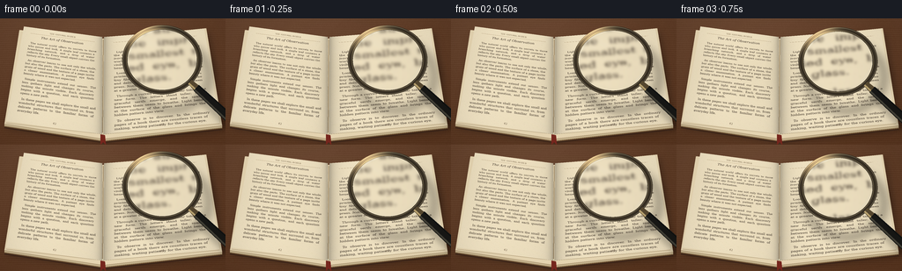
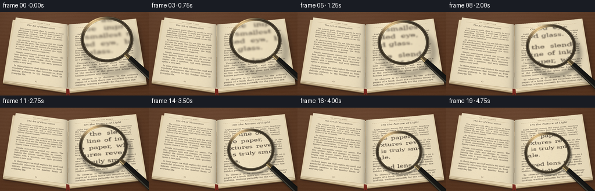

CODING AGENTS AS PIXEL WORLD MODELS
traex/GPT-6.1-Sol · phygen_066
点击播放 · 原生 RGB 像素
逐轮保存的候选
回放视频、检查图与代码变化。
每份候选均可单独播放。实际图片检查记录在下方工具轨迹中。
候选 01播放与检查图
点击播放 · 原生 RGB 像素


展开代码变化
--- 上一保存版本
+++ 本次保存版本
@@ -0,0 +1,196 @@
+from pathlib import Path
+import numpy as np
+from PIL import Image, ImageDraw, ImageFont, ImageFilter
+from scipy.ndimage import map_coordinates, gaussian_filter
+import artifact_io
+
+ROOT = Path(__file__).resolve().parent
+S = 4
+W,H=256*S,144*S
+rng = np.random.default_rng(681)
+Y,X=np.mgrid[0:H,0:W].astype(float)
+x,y=X/S,Y/S
+
+def font(size,bold=False,italic=False):
+ name='DejaVuSerif'+('-Bold' if bold else '-Italic' if italic else '')+'.ttf'
+ return ImageFont.truetype('/usr/share/fonts/truetype/dejavu/'+name,size)
+
+def page(right):
+ pw,ph=900,1200
+ yy,xx=np.mgrid[0:ph,0:pw]
+ grain=rng.normal(0,1.35,(ph,pw))
+ fibers=gaussian_filter(rng.normal(0,1,(ph,pw)),(0.35,3))*2.8
+ illumination=2.1*np.sin(xx/135)+1.8*np.cos(yy/180)
+ a=np.array([239,225,193])[None,None,:]+(grain+fibers+illumination)[...,None]
+ # Subtle foxing and individual fibers, magnified with the print.
+ im=Image.fromarray(np.uint8(np.clip(a,0,255)))
+ d=ImageDraw.Draw(im)
+ for _ in range(1800):
+ px=int(rng.integers(pw)); py=int(rng.integers(ph))
+ d.line((px,py,px+int(rng.integers(2,8)),py+1),fill=(219,205,176),width=1)
+ ink=(64,53,43)
+ d.text((pw/2,49),'THE NATURAL WORLD',font=font(24),fill=(104,84,58),anchor='mt')
+ d.line((83,89,817,89),fill=(163,139,103),width=2)
+ if right:
+ d.text((450,119),'On the Nature of Light',font=font(43,italic=True),fill=ink,anchor='mt')
+ paragraphs=[
+ 'Light travels across the quiet room, touching the edges of every leaf and letter. Upon the ivory page, each fine impression holds a world of detail. The smallest marks, scarcely visible to the unaided eye, become distinct beneath the polished glass.',
+ 'Look closely at the slender strokes of the printed words. A line of ink spreads into the tiny fibers of the paper, where soft shadows and delicate textures reveal the work of the press. Nothing is truly smooth when it is seen at a greater scale.',
+ 'Through a curved lens the familiar takes on a new form. The letters stand taller; their graceful serifs emerge, and the spaces between them seem to breathe. Light bends at the surface of the glass and brings the hidden pattern into view.',
+ 'To observe is to discover. In the ordinary pages of a book there are countless traces of making, waiting patiently for the curious eye.'
+ ]
+ else:
+ d.text((450,119),'The Art of Observation',font=font(41,italic=True),fill=ink,anchor='mt')
+ paragraphs=[
+ 'The natural world offers its secrets to those who pause and look. A single leaf contains a branching network, and a drop of water reflects the sky. Every small object carries the history of its formation.',
+ 'An observer learns to see not only the whole, but also the parts. The surface of a stone, the grain of wood and the texture of a page invite a closer examination. A patient eye finds beauty where it was not expected.',
+ 'Simple instruments extend our senses. The lens gathers light and changes its course, making the minute visible. Each discovery begins with a question, and each question opens a new path.',
+ 'In these pages we shall explore the small and wonderful structures that surround us, from delicate patterns to the familiar forms of everyday life.'
+ ]
+ bodyfont=font(31)
+ ty=210
+ for para in paragraphs:
+ words=para.split(); lines=[]; line=''
+ for word in words:
+ proposal=(line+' '+word).strip()
+ if d.textlength(proposal,font=bodyfont)>730:
+ lines.append(line); line=word
+ else: line=proposal
+ if line: lines.append(line)
+ for j,line in enumerate(lines):
+ # Traditional book typography, justified with a ragged final line.
+ words=line.split(); widths=[d.textlength(w,font=bodyfont) for w in words]
+ gap=(730-sum(widths))/(len(words)-1) if j<len(lines)-1 and len(words)>1 else d.textlength(' ',font=bodyfont)
+ tx=85+(20 if j==0 else 0)
+ for word,ww in zip(words,widths):
+ d.text((tx,ty),word,font=bodyfont,fill=ink)
+ tx+=ww+gap
+ ty+=43
+ ty+=23
+ d.text((450,1147),'42' if not right else '43',font=font(26),fill=(99,81,61),anchor='mt')
+ return np.asarray(im).astype(float)
+
+# Warm wooden reading desk, with continuous fine grain.
+woodnoise=gaussian_filter(rng.normal(0,1,(H,W)),(1.8,0.45))*3
+woodgrain=3*np.sin(y*2.6+np.sin(x*.034)*1.4)+1.8*np.sin(y*8.3+x*.008)
+woodlight=12*np.exp(-((x-83)**2+(y-20)**2)/17000)-7*y/144
+bg=np.clip(np.array([95,60,38])+ (woodnoise+woodgrain+woodlight)[...,None],0,255)
+base=Image.fromarray(bg.astype(np.uint8))
+# Cast book shadow.
+shadow=Image.new('L',(W,H),0); sd=ImageDraw.Draw(shadow)
+poly=[(22,13),(117,23),(234,11),(252,122),(117,137),(5,120)]
+sd.polygon([(int((a+3)*S),int((b+5)*S)) for a,b in poly],fill=130)
+shadow=shadow.filter(ImageFilter.GaussianBlur(4*S))
+bg=np.asarray(base).astype(float)*(1-np.asarray(shadow)[...,None]/255*.56)
+base=Image.fromarray(np.uint8(bg)); d=ImageDraw.Draw(base)
+# Bound leather cover, layered paper edges.
+for off,color in [(5,(58,37,26)),(4,(87,58,35)),(3,(161,139,102)),(2,(211,193,155)),(1,(183,162,125)),(0,(233,216,180))]:
+ pts=[(int(a*S),int((b+off)*S)) for a,b in poly]
+ d.polygon(pts,fill=color)
+ if off<4:
+ d.line([(7*S,(119+off)*S),(117*S,(132+off)*S),(249*S,(120+off)*S)],fill=(140+off*13,119+off*13,85+off*12),width=1)
+bg=np.asarray(base).astype(float)
+
+def warp_page(tex,quad,right):
+ # Map the two open leaves into their gently slanted quadrilaterals.
+ dest=np.array(quad,dtype=float)
+ src=np.array([[0,0],[1,0],[1,1],[0,1]],dtype=float)
+ A=[]; b=[]
+ for (dx,dy),(u,v) in zip(dest,src):
+ A.extend([[dx,dy,1,0,0,0,-u*dx,-u*dy],[0,0,0,dx,dy,1,-v*dx,-v*dy]])
+ b.extend([u,v])
+ h=np.r_[np.linalg.solve(A,b),1].reshape(3,3)
+ den=h[2,0]*x+h[2,1]*y+h[2,2]
+ u=(h[0,0]*x+h[0,1]*y+h[0,2])/den
+ v=(h[1,0]*x+h[1,1]*y+h[1,2])/den
+ mask=(u>=0)&(u<=1)&(v>=0)&(v<=1)
+ # Paper curves into the gutter; print follows the same curved surface.
+ edge=u if right else 1-u
+ bend=0.012*np.exp(-edge/0.09)*np.sin(np.pi*v)
+ vtex=np.clip(v+bend,0,1)
+ pixels=np.stack([map_coordinates(tex[:,:,c],[vtex*(tex.shape[0]-1),u*(tex.shape[1]-1)],order=1,mode='nearest') for c in range(3)],axis=-1)
+ shading=1-.24*np.exp(-edge/.040)-.047*np.exp(-edge/.15)
+ shading+=.015*np.sin(u*np.pi)
+ pixels*=shading[...,None]
+ return mask,pixels
+
+for right,quad in [(False,[(27,9),(116,21),(116,132),(7,117)]),(True,[(118,21),(232,12),(249,119),(117,132)])]:
+ mask,pixels=warp_page(page(right),quad,right)
+ bg[mask]=pixels[mask]
+# Deep narrow gutter and the cloth bookmark tucked in the spine.
+im=Image.fromarray(np.uint8(np.clip(bg,0,255))); d=ImageDraw.Draw(im)
+d.line([(117*S,24*S),(116.4*S,130*S)],fill=(102,79,48),width=2)
+d.polygon([(114*S,132*S),(119*S,133*S),(120*S,144*S),(117*S,141*S),(114*S,144*S)],fill=(120,39,30))
+bg=np.asarray(im).astype(float)
+
+# Keep the scene stationary: only the lens descends toward the paper.
+frames=[]
+for i in range(20):
+ t=i/19
+ ease=t*t*(3-2*t)
+ cx=184-10*ease; cy=47+31*ease
+ rx=43-5.3*ease; ry=37.5-3.5*ease
+ z=1-ease
+ rho=np.sqrt(((x-cx)/rx)**2+((y-cy)/ry)**2)
+ # Shadow converges with the lens as it lowers.
+ sr=np.sqrt(((x-cx-7*z-2)/(rx+1))**2+((y-cy-16*z-3)/(ry+1))**2)
+ sh=np.exp(-((sr-1)/(.045+.15*z))**2)*(.21+.18*ease)
+ scene=bg*(1-sh[...,None])
+ # Lens refraction: a slight radial change, with focus becoming crisp.
+ magnification=3.6-1.0*ease
+ localmag=magnification*(1+.075*np.minimum(rho,1)**4)
+ sx=cx+(x-cx)/localmag; sy=cy+(y-cy)/localmag
+ sampled=np.stack([map_coordinates(bg[:,:,c],[sy*S,sx*S],order=1,mode='nearest') for c in range(3)],axis=-1)
+ blur=(1.65*z*z+.025)*S
+ if blur>.2: sampled=gaussian_filter(sampled,(blur,blur,0))
+ # Clear optical glass: colorless center, gentle cool edge and broad reflected light.
+ edge=np.clip((rho-.78)/.22,0,1)
+ sampled=sampled*(1-.035*edge[...,None])+np.array([8,12,14])*edge[...,None]*.45
+ reflect=np.exp(-(((x-(cx-12))/19)**2+((y-(cy-19))/7)**2))*0.058
+ sampled=sampled*(1-reflect[...,None])+np.array([252,252,242])*reflect[...,None]
+ mask=rho<.922
+ scene[mask]=sampled[mask]
+ # Three dimensional polished dark brass rim with directional reflections.
+ theta=np.arctan2((y-cy)/ry,(x-cx)/rx)
+ rim=(rho>=.918)&(rho<=1.055)
+ metal=np.zeros_like(scene)
+ shine=np.maximum(0,np.cos(theta+2.15))**8
+ fine=np.exp(-((rho-.944)/.009)**2)
+ outer=np.exp(-((rho-1.03)/.012)**2)
+ metal[:]=np.array([42,36,28])+shine[...,None]*np.array([158,134,94])+fine[...,None]*np.array([96,87,63])+outer[...,None]*np.array([71,65,50])
+ # central rim inset, catching a warmer secondary light
+ metal+=np.exp(-((rho-.984)/.010)**2)[...,None]*np.array([30,25,17])
+ scene[rim]=metal[rim]
+ im=Image.fromarray(np.uint8(np.clip(scene,0,255)))
+ # Handle joins the lower-right metal frame and extends naturally out of view.
+ ux,uy=.735,.678
+ start=(cx+ux*rx,cy+uy*ry)
+ end=(start[0]+64,start[1]+59)
+ perp=np.array([-uy,ux])
+ def handle_poly(a,b,wa,wb):
+ return [tuple((np.array(a)+perp*wa)*S),tuple((np.array(b)+perp*wb)*S),tuple((np.array(b)-perp*wb)*S),tuple((np.array(a)-perp*wa)*S)]
+ # Soft handle shadow offset changes with distance.
+ hs=Image.new('L',(W,H),0); hd=ImageDraw.Draw(hs)
+ off=np.array([3+z*5,4+z*11])
+ hd.polygon(handle_poly(np.array(start)+off,np.array(end)+off,4.5,6),fill=95)
+ hs=hs.filter(ImageFilter.GaussianBlur((1+2*z)*S))
+ a=np.asarray(im).astype(float)*(1-np.asarray(hs)[...,None]/255*.60)
+ im=Image.fromarray(np.uint8(a)); d=ImageDraw.Draw(im)
+ joint=np.array(start)+np.array([ux,uy])*10
+ d.polygon(handle_poly(start,joint,3.1,3.9),fill=(87,73,49))
+ d.line([tuple((np.array(start)+perp*2)*S),tuple((joint+perp*2)*S)],fill=(187,164,113),width=2*S)
+ d.polygon(handle_poly(joint,end,4.4,5.7),fill=(24,24,22))
+ d.line([tuple((joint+perp*2.8)*S),tuple((np.array(end)+perp*3.9)*S)],fill=(66,64,54),width=2*S)
+ d.line([tuple((joint-perp*3.5)*S),tuple((np.array(end)-perp*4.6)*S)],fill=(13,15,15),width=S)
+ # restrained glints on the lens surface, separate from its metal rim.
+ g=Image.new('RGBA',(W,H),(0,0,0,0)); gd=ImageDraw.Draw(g)
+ gd.arc(((cx-rx*.88)*S,(cy-ry*.88)*S,(cx+rx*.88)*S,(cy+ry*.88)*S),196,252,fill=(255,255,237,99),width=2)
+ gd.arc(((cx-rx*.86)*S,(cy-ry*.86)*S,(cx+rx*.86)*S,(cy+ry*.86)*S),17,46,fill=(222,238,240,55),width=2)
+ im=Image.alpha_composite(im.convert('RGBA'),g).convert('RGB')
+ # Gentle photographic vignette and warm daylight, no camera motion.
+ a=np.asarray(im).astype(float)
+ vignette=1-.10*((x-128)/171)**2-.06*((y-69)/116)**2
+ a*=vignette[...,None]
+ out=Image.fromarray(np.uint8(np.clip(a,0,255))).resize((256,144),Image.Resampling.LANCZOS)
+ frames.append(np.asarray(out))
+artifact_io.save(np.stack(frames),ROOT)
可观测工具轨迹
实际执行的命令与返回图片。
命令 1exit 0
/bin/bash -lc 'ls -la && cat prompt.txt && cat GENERATION_RULES.md && cat task_spec.json'
命令 2exit 0
/bin/bash -lc 'cat artifact_io.py && fc-list | head -18'
命令 3exit 0
/bin/bash -lc "python - <<'PY'
import numpy,PIL,scipy
print('available')
PY"命令 4exit 0
/bin/bash -lc "cat > generate.py <<'PY'
from pathlib import Path
import numpy as np
from PIL import Image, ImageDraw, ImageFont, ImageFilter
from scipy.ndimage import map_coordinates, gaussian_filter
import artifact_io
ROOT = Path(__file__).resolve().parent
S = 4
W,H=256*S,144*S
rng = np.random.default_rng(681)
Y,X=np.mgrid[0:H,0:W].astype(float)
x,y=X/S,Y/S
def font(size,bold=False,italic=False):
name='DejaVuSerif'+('-Bold' if bold else '-Italic' if italic else '')+'.ttf'
return ImageFont.truetype('/usr/share/fonts/truetype/dejavu/'+name,size)
def page(right):
pw,ph=900,1200
yy,xx=np.mgrid[0:ph,0:pw]
grain=rng.normal(0,1.35,(ph,pw))
fibers=gaussian_filter(rng.normal(0,1,(ph,pw)),(0.35,3))*2.8
illumination=2.1*np.sin(xx/135)+1.8*np.cos(yy/180)
a=np.array([239,225,193])[None,None,:]+(grain+fibers+illumination)[...,None]
# Subtle foxing and individual fibers, magnified with the print.
im=Image.fromarray(np.uint8(np.clip(a,0,255)))
d=ImageDraw.Draw(im)
for _ in range(1800):
px=int(rng.integers(pw)); py=int(rng.integers(ph))
d.line((px,py,px+int(rng.integers(2,8)),py+1),fill=(219,205,176),width=1)
ink=(64,53,43)
d.text((pw/2,49),'THE NATURAL WORLD',font=font(24),fill=(104,84,58),anchor='mt')
d.line((83,89,817,89),fill=(163,139,103),width=2)
if right:
d.text((450,119),'On the Nature of Light',font=font(43,italic=True),fill=ink,anchor='mt')
paragraphs=[
'Light travels across the quiet room, touching the edges of every leaf and letter. Upon the ivory page, each fine impression holds a world of detail. The smallest marks, scarcely visible to the unaided eye, become distinct beneath the polished glass.',
'Look closely at the slender strokes of the printed words. A line of ink spreads into the tiny fibers of the paper, where soft shadows and delicate textures reveal the work of the press. Nothing is truly smooth when it is seen at a greater scale.',
'Through a curved lens the familiar takes on a new form. The letters stand taller; their graceful serifs emerge, and the spaces between them seem to breathe. Light bends at the surface of the glass and brings the hidden pattern into view.',
'To observe is to discover. In the ordinary pages of a book there are countless traces of making, waiting patiently for the curious eye.'
]
else:
d.text((450,119),'The Art of Observation',font=font(41,italic=True),fill=ink,anchor='mt')
paragraphs=[
'The natural world offers its secrets to those who pause and look. A single leaf contains a branching network, and a drop of water reflects the sky. Every small object carries the history of its formation.',
'An observer learns to see not only the whole, but also the parts. The surface of a stone, the grain of wood and the texture of a page invite a closer examination. A patient eye finds beauty where it was not expected.',
'Simple instruments extend our senses. The lens gathers light and changes its course, making the minute visible. Each discovery begins with a question, and each question opens a new path.',
'In these pages we shall explore the small and wonderful structures that surround us, from delicate patterns to the familiar forms of everyday life.'
]
bodyfont=font(31)
ty=210
for para in paragraphs:
words=para.split(); lines=[]; line=''
for word in words:
proposal=(line+' '+word).strip()
if d.textlength(proposal,font=bodyfont)>730:
lines.append(line); line=word
else: line=proposal
if line: lines.append(line)
for j,line in enumerate(lines):
# Traditional book typography, justified with a ragged final line.
words=line.split(); widths=[d.textlength(w,font=bodyfont) for w in words]
gap=(730-sum(widths))/(len(words)-1) if j<len(lines)-1 and len(words)>1 else d.textlength(' ',font=bodyfont)
tx=85+(20 if j==0 else 0)
for word,ww in zip(words,widths):
d.text((tx,ty),word,font=bodyfont,fill=ink)
tx+=ww+gap
ty+=43
ty+=23
d.text((450,1147),'42' if not right else '43',font=font(26),fill=(99,81,61),anchor='mt')
return np.asarray(im).astype(float)
# Warm wooden reading desk, with continuous fine grain.
woodnoise=gaussian_filter(rng.normal(0,1,(H,W)),(1.8,0.45))*3
woodgrain=3*np.sin(y*2.6+np.sin(x*.034)*1.4)+1.8*np.sin(y*8.3+x*.008)
woodlight=12*np.exp(-((x-83)**2+(y-20)**2)/17000)-7*y/144
bg=np.clip(np.array([95,60,38])+ (woodnoise+woodgrain+woodlight)[...,None],0,255)
base=Image.fromarray(bg.astype(np.uint8))
# Cast book shadow.
shadow=Image.new('L',(W,H),0); sd=ImageDraw.Draw(shadow)
poly=[(22,13),(117,23),(234,11),(252,122),(117,137),(5,120)]
sd.polygon([(int((a+3)*S),int((b+5)*S)) for a,b in poly],fill=130)
shadow=shadow.filter(ImageFilter.GaussianBlur(4*S))
bg=np.asarray(base).astype(float)*(1-np.asarray(shadow)[...,None]/255*.56)
base=Image.fromarray(np.uint8(bg)); d=ImageDraw.Draw(base)
# Bound leather cover, layered paper edges.
for off,color in [(5,(58,37,26)),(4,(87,58,35)),(3,(161,139,102)),(2,(211,193,155)),(1,(183,162,125)),(0,(233,216,180))]:
pts=[(int(a*S),int((b+off)*S)) for a,b in poly]
d.polygon(pts,fill=color)
if off<4:
d.line([(7*S,(119+off)*S),(117*S,(132+off)*S),(249*S,(120+off)*S)],fill=(140+off*13,119+off*13,85+off*12),width=1)
bg=np.asarray(base).astype(float)
def warp_page(tex,quad,right):
# Map the two open leaves into their gently slanted quadrilaterals.
dest=np.array(quad,dtype=float)
src=np.array([[0,0],[1,0],[1,1],[0,1]],dtype=float)
A=[]; b=[]
for (dx,dy),(u,v) in zip(dest,src):
A.extend([[dx,dy,1,0,0,0,-u*dx,-u*dy],[0,0,0,dx,dy,1,-v*dx,-v*dy]])
b.extend([u,v])
h=np.r_[np.linalg.solve(A,b),1].reshape(3,3)
den=h[2,0]*x+h[2,1]*y+h[2,2]
u=(h[0,0]*x+h[0,1]*y+h[0,2])/den
v=(h[1,0]*x+h[1,1]*y+h[1,2])/den
mask=(u>=0)&(u<=1)&(v>=0)&(v<=1)
# Paper curves into the gutter; print follows the same curved surface.
edge=u if right else 1-u
bend=0.012*np.exp(-edge/0.09)*np.sin(np.pi*v)
vtex=np.clip(v+bend,0,1)
pixels=np.stack([map_coordinates(tex[:,:,c],[vtex*(tex.shape[0]-1),u*(tex.shape[1]-1)],order=1,mode='nearest') for c in range(3)],axis=-1)
shading=1-.24*np.exp(-edge/.040)-.047*np.exp(-edge/.15)
shading+=.015*np.sin(u*np.pi)
pixels*=shading[...,None]
return mask,pixels
for right,quad in [(False,[(27,9),(116,21),(116,132),(7,117)]),(True,[(118,21),(232,12),(249,119),(117,132)])]:
mask,pixels=warp_page(page(right),quad,right)
bg[mask]=pixels[mask]
# Deep narrow gutter and the cloth bookmark tucked in the spine.
im=Image.fromarray(np.uint8(np.clip(bg,0,255))); d=ImageDraw.Draw(im)
d.line([(117*S,24*S),(116.4*S,130*S)],fill=(102,79,48),width=2)
d.polygon([(114*S,132*S),(119*S,133*S),(120*S,144*S),(117*S,141*S),(114*S,144*S)],fill=(120,39,30))
bg=np.asarray(im).astype(float)
# Keep the scene stationary: only the lens descends toward the paper.
frames=[]
for i in range(20):
t=i/19
ease=t*t*(3-2*t)
cx=184-10*ease; cy=47+31*ease
rx=43-5.3*ease; ry=37.5-3.5*ease
z=1-ease
rho=np.sqrt(((x-cx)/rx)**2+((y-cy)/ry)**2)
# Shadow converges with the lens as it lowers.
sr=np.sqrt(((x-cx-7*z-2)/(rx+1))**2+((y-cy-16*z-3)/(ry+1))**2)
sh=np.exp(-((sr-1)/(.045+.15*z))**2)*(.21+.18*ease)
scene=bg*(1-sh[...,None])
# Lens refraction: a slight radial change, with focus becoming crisp.
magnification=3.6-1.0*ease
localmag=magnification*(1+.075*np.minimum(rho,1)**4)
sx=cx+(x-cx)/localmag; sy=cy+(y-cy)/localmag
sampled=np.stack([map_coordinates(bg[:,:,c],[sy*S,sx*S],order=1,mode='nearest') for c in range(3)],axis=-1)
blur=(1.65*z*z+.025)*S
if blur>.2: sampled=gaussian_filter(sampled,(blur,blur,0))
# Clear optical glass: colorless center, gentle cool edge and broad reflected light.
edge=np.clip((rho-.78)/.22,0,1)
sampled=sampled*(1-.035*edge[...,None])+np.array([8,12,14])*edge[...,None]*.45
reflect=np.exp(-(((x-(cx-12))/19)**2+((y-(cy-19))/7)**2))*0.058
sampled=sampled*(1-reflect[...,None])+np.array([252,252,242])*reflect[...,None]
mask=rho<.922
scene[mask]=sampled[mask]
# Three dimensional polished dark brass rim with directional reflections.
theta=np.arctan2((y-cy)/ry,(x-cx)/rx)
rim=(rho>=.918)&(rho<=1.055)
metal=np.zeros_like(scene)
shine=np.maximum(0,np.cos(theta+2.15))**8
fine=np.exp(-((rho-.944)/.009)**2)
outer=np.exp(-((rho-1.03)/.012)**2)
metal[:]=np.array([42,36,28])+shine[...,None]*np.array([158,134,94])+fine[...,None]*np.array([96,87,63])+outer[...,None]*np.array([71,65,50])
# central rim inset, catching a warmer secondary light
metal+=np.exp(-((rho-.984)/.010)**2)[...,None]*np.array([30,25,17])
scene[rim]=metal[rim]
im=Image.fromarray(np.uint8(np.clip(scene,0,255)))
# Handle joins the lower-right metal frame and extends naturally out of view.
ux,uy=.735,.678
start=(cx+ux*rx,cy+uy*ry)
end=(start[0]+64,start[1]+59)
perp=np.array([-uy,ux])
def handle_poly(a,b,wa,wb):
return [tuple((np.array(a)+perp*wa)*S),tuple((np.array(b)+perp*wb)*S),tuple((np.array(b)-perp*wb)*S),tuple((np.array(a)-perp*wa)*S)]
# Soft handle shadow offset changes with distance.
hs=Image.new('L',(W,H),0); hd=ImageDraw.Draw(hs)
off=np.array([3+z*5,4+z*11])
hd.polygon(handle_poly(np.array(start)+off,np.array(end)+off,4.5,6),fill=95)
hs=hs.filter(ImageFilter.GaussianBlur((1+2*z)*S))
a=np.asarray(im).astype(float)*(1-np.asarray(hs)[...,None]/255*.60)
im=Image.fromarray(np.uint8(a)); d=ImageDraw.Draw(im)
joint=np.array(start)+np.array([ux,uy])*10
d.polygon(handle_poly(start,joint,3.1,3.9),fill=(87,73,49))
d.line([tuple((np.array(start)+perp*2)*S),tuple((joint+perp*2)*S)],fill=(187,164,113),width=2*S)
d.polygon(handle_poly(joint,end,4.4,5.7),fill=(24,24,22))
d.line([tuple((joint+perp*2.8)*S),tuple((np.array(end)+perp*3.9)*S)],fill=(66,64,54),width=2*S)
d.line([tuple((joint-perp*3.5)*S),tuple((np.array(end)-perp*4.6)*S)],fill=(13,15,15),width=S)
# restrained glints on the lens surface, separate from its metal rim.
g=Image.new('RGBA',(W,H),(0,0,0,0)); gd=ImageDraw.Draw(g)
gd.arc(((cx-rx*.88)*S,(cy-ry*.88)*S,(cx+rx*.88)*S,(cy+ry*.88)*S),196,252,fill=(255,255,237,99),width=2)
gd.arc(((cx-rx*.86)*S,(cy-ry*.86)*S,(cx+rx*.86)*S,(cy+ry*.86)*S),17,46,fill=(222,238,240,55),width=2)
im=Image.alpha_composite(im.convert('RGBA'),g).convert('RGB')
# Gentle photographic vignette and warm daylight, no camera motion.
a=np.asarray(im).astype(float)
vignette=1-.10*((x-128)/171)**2-.06*((y-69)/116)**2
a*=vignette[...,None]
out=Image.fromarray(np.uint8(np.clip(a,0,255))).resize((256,144),Image.Resampling.LANCZOS)
frames.append(np.asarray(out))
artifact_io.save(np.stack(frames),ROOT)
PY
python generate.py"命令 5exit 0
/bin/bash -lc "ls -lh generate.py pixels.npz index.html inspection.png && python - <<'PY'
import numpy as np
from pathlib import Path
p=np.load('pixels.npz')['pixels']
print('Packed RGB tensor:',p.shape,'; frames:',len(list(Path('frames').glob('*.png'))))
PY"视觉工具实际返回图片 1

保存候选 1 份；完成命令 5 次；可验证图片返回 1 张。原始 API 响应与完整日志保留在本地。